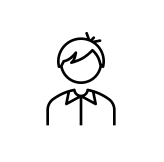
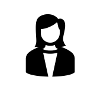
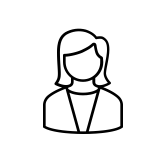
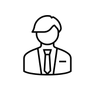

팀명 2%는 Team28을 숫자와 기호의 조합으로 나타낸 것이다.
또한 팀원 모두의 이름에 "ㅇ"이 들어가기 때문에
대학생들의 부족한 2%를 채워줄 수 있는 플랫폼을 만들겠다는 포부를 담고 있다.

유나연이렇게 열정적으로 프로그램을 만들 수 있다는 점에서 굉장히 유익한 시간이었지만 신체적으로는 고통스러운 시간이었던 것 같다. |

김민경우리가 생각해낸 아이디어를 직접 구현해내는 과정이 신기했고, 구현해내는 과정에서 배울 점이 많았어서 좋았다. 하지만 그 안에는 힘든 시간이 존재함을 깨달았다. |

유선아좋은 팀원들과 함께 아이디어를 기획하고 개발하는 과정에서 많은 것을 배울 수 있었다. 완전한 서비스를 구현하기에 시간이 너무 짧아서 아쉽기도 하다. |
정수인팀원들이 잘 맞아서 무엇보다 재밌게 코딩할 수 있어서 좋았다. 또 직접 얻기 힘든 지식들도 하나하나 설명 들어가며 배울 수 있어서 좋았다. 완벽히 구현해내지 못하는 점과 부족한 지식과 실력이 역시나 아쉽지만, 후회는 없다. |

한영진다른 학교의 학생들과 팀을 이뤄 프로젝트를 진행한다는 것이 신선했고 유익한 경험이었다. 일정이 짧아 처음 기대했던 만큼의 성과가 나오지 않아 아쉽지만 우리 힘으로 무언가를 만들고 결과물이 나왔다는 점에서 뿌듯하다. |